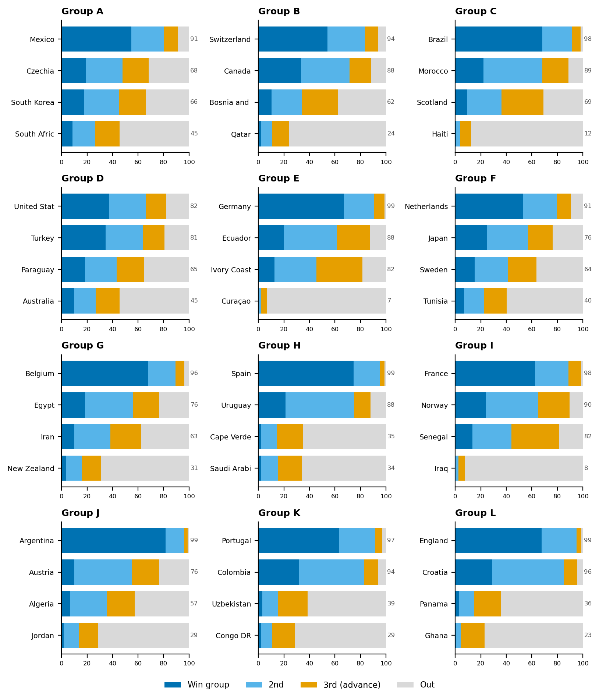

Champion: 🇪🇸 SPAIN — beats Argentina 1-0 in the Final.
Podium: 🥈 Argentina · 🥉 France · 4th England
Predictions locked before the June 11, 2026 kickoff (built June 7, Group K recalibrated to prediction-market prices, and a final pre-kickoff review of squad news that confirmed the entry). All kickoff times are Ulaanbaatar time (UTC+8). Write actual scores in the blank columns after each match.
Simulated champion odds: Spain 27% · Argentina 19% · France 14% · England 7% · Colombia 4% · Portugal 4% · Brazil 4% · others <3%
Reading the tables: Exp. is the model’s expected points for that pick under the pool’s 3/2/1 rule (3 exact, 2 result+goal-difference, 1 result) — higher means a more confident pick. Fill in Actual (the real 90-minute score) and Pts (what you scored) as the games are played.
Each team’s qualification odds come from 100,000 simulations. The bars show the chance of winning the group (dark blue), finishing second (light blue), advancing as a best third-placed team (orange), or going out (grey).

Mexico opens the whole tournament at the Azteca, 2,240m up.
| Team | Win grp | 2nd | 3rd→adv | Qualify | Outlook |
|---|---|---|---|---|---|
| 🥇 Mexico | 55% | 26% | 11% | 91% | █████████░ |
| 🥈 Czechia | 19% | 29% | 20% | 68% | ███████░░░ |
| 🥉 South Korea | 18% | 28% | 21% | 66% | ███████░░░ |
| ▫️ South Africa | 8% | 18% | 19% | 45% | █████░░░░░ |
🔮 Pick: Mexico is the clearest host-advantage story in the draw — opener at the Azteca (2,240 m altitude), ~68% market favorite, Jiménez in form. Second place is a genuine coin flip: South Korea over Czechia on Elo (1756 vs 1733) and tournament pedigree; their opener effectively decides it. Czechia still advances as a third-placer.
⭐ Star: Hirving Lozano (MEX)
👀 What to watch: South Korea vs Czechia (MD1) decides
2nd
⚡ Biggest risk: Czechia (68% qual) edges Korea for the
runner-up spot
Predicted scores:
| # | Date (UB) | Match | Pick | Exp. | Actual | Pts |
|---|---|---|---|---|---|---|
| 1 | Jun 12 03:00 | Mexico – South Africa | 1-0 | 1.08 | ____ | __ |
| 2 | Jun 12 10:00 | South Korea – Czechia | 1-1 | 0.74 | ____ | __ |
| 25 | Jun 19 00:00 | Czechia – South Africa | 1-0 | 0.84 | ____ | __ |
| 28 | Jun 19 09:00 | Mexico – South Korea | 1-0 | 0.95 | ____ | __ |
| 53 | Jun 25 09:00 | Czechia – Mexico | 0-1 | 0.90 | ____ | __ |
| 54 | Jun 25 09:00 | South Africa – South Korea | 0-1 | 0.79 | ____ | __ |
Qatar (24% qual) is the field’s weakest side — GD currency.
| Team | Win grp | 2nd | 3rd→adv | Qualify | Outlook |
|---|---|---|---|---|---|
| 🥇 Switzerland | 54% | 29% | 10% | 94% | █████████░ |
| 🥈 Canada | 33% | 38% | 17% | 88% | █████████░ |
| 🥉 Bosnia and Herzegovina | 10% | 24% | 28% | 62% | ██████░░░░ |
| ▫️ Qatar | 2% | 8% | 13% | 24% | ██░░░░░░░░ |
🔮 Pick: Switzerland is the quiet Elo monster (1894 — above Belgium). Canada gets host energy but the head-to-head tilts Swiss (50% vs 30%). Qatar is the weakest team in the field (Elo 1423) — everyone farms them for goal difference. Bosnia’s win over Qatar books a third-place ticket.
⭐ Star: Granit Xhaka (SUI)
👀 What to watch: Switzerland vs Canada (MD3) for top
spot
⚡ Biggest risk: Co-host Canada (88% qual) wins the
group outright
Predicted scores:
| # | Date (UB) | Match | Pick | Exp. | Actual | Pts |
|---|---|---|---|---|---|---|
| 3 | Jun 13 03:00 | Canada – Bosnia and Herzegovina | 1-0 | 0.90 | ____ | __ |
| 8 | Jun 14 03:00 | Qatar – Switzerland | 0-1 | 1.08 | ____ | __ |
| 26 | Jun 19 03:00 | Switzerland – Bosnia and Herzegovina | 1-0 | 1.03 | ____ | __ |
| 27 | Jun 19 06:00 | Canada – Qatar | 1-0 | 1.12 | ____ | __ |
| 51 | Jun 25 03:00 | Switzerland – Canada | 2-1 | 0.80 | ____ | __ |
| 52 | Jun 25 03:00 | Bosnia and Herzegovina – Qatar | 1-0 | 0.95 | ____ | __ |
Brazil at 98% qual even without Rodrygo and a doubtful Neymar.
| Team | Win grp | 2nd | 3rd→adv | Qualify | Outlook |
|---|---|---|---|---|---|
| 🥇 Brazil | 68% | 23% | 7% | 98% | ██████████ |
| 🥈 Morocco | 22% | 46% | 20% | 89% | █████████░ |
| 🥉 Scotland | 10% | 27% | 33% | 69% | ███████░░░ |
| ▫️ Haiti | 0% | 4% | 8% | 12% | █░░░░░░░░░ |
🔮 Pick: Brazil tops the group even without Rodrygo (ACL) and with Neymar’s calf in doubt — Elo 1988 absorbs it. The pivotal game is Scotland–Morocco for second: the market is decisive (Morocco 50% vs 23%). Scotland’s 3 points die on goal difference in the third-place table.
⭐ Star: Vinicius Jr (BRA)
👀 What to watch: Scotland vs Morocco (MD2) for
2nd
⚡ Biggest risk: Scotland (69% qual) upsets Morocco for
second
Predicted scores:
| # | Date (UB) | Match | Pick | Exp. | Actual | Pts |
|---|---|---|---|---|---|---|
| 5 | Jun 14 09:00 | Haiti – Scotland | 0-1 | 1.00 | ____ | __ |
| 7 | Jun 14 06:00 | Brazil – Morocco | 1-0 | 0.97 | ____ | __ |
| 29 | Jun 20 09:00 | Brazil – Haiti | 2-0 | 1.37 | ____ | __ |
| 30 | Jun 20 06:00 | Scotland – Morocco | 0-1 | 0.90 | ____ | __ |
| 49 | Jun 25 06:00 | Scotland – Brazil | 0-1 | 1.05 | ____ | __ |
| 50 | Jun 25 06:00 | Morocco – Haiti | 1-0 | 1.28 | ____ | __ |
Genuinely the hardest group to call: three teams within 17 pp.
| Team | Win grp | 2nd | 3rd→adv | Qualify | Outlook |
|---|---|---|---|---|---|
| 🥇 United States | 37% | 29% | 16% | 82% | ████████░░ |
| 🥈 Turkey | 35% | 29% | 17% | 81% | ████████░░ |
| 🥉 Paraguay | 18% | 25% | 22% | 65% | ██████░░░░ |
| ▫️ Australia | 10% | 17% | 18% | 45% | █████░░░░░ |
🔮 Pick: The tightest group in the tournament. Turkey has the higher Elo (1906), but the USA has host advantage and the market’s blessing (group-winner: USA 40%, Turkey 35%); their head-to-head priced at a literal 36.3/36.3 tie, broken toward the USA because simulations show it routes both teams into safer bracket slots. Paraguay (Elo 1833, underrated) advances third.
⭐ Star: Arda Guler (TUR)
👀 What to watch: Turkey vs USA (MD3) — 82% vs 81%, the
tightest in the draw
⚡ Biggest risk: Turkey tops it and reroutes the whole
bracket
Predicted scores:
| # | Date (UB) | Match | Pick | Exp. | Actual | Pts |
|---|---|---|---|---|---|---|
| 4 | Jun 13 09:00 | United States – Paraguay | 1-0 | 0.86 | ____ | __ |
| 6 | Jun 14 12:00 | Australia – Turkey | 0-1 | 0.94 | ____ | __ |
| 31 | Jun 20 12:00 | Turkey – Paraguay | 1-0 | 0.82 | ____ | __ |
| 32 | Jun 20 03:00 | United States – Australia | 1-0 | 0.95 | ____ | __ |
| 59 | Jun 26 10:00 | Turkey – United States | 1-1 | 0.68 | ____ | __ |
| 60 | Jun 26 10:00 | Paraguay – Australia | 1-0 | 0.85 | ____ | __ |
Germany vs Curacao is the tournament’s biggest mismatch (92%).
| Team | Win grp | 2nd | 3rd→adv | Qualify | Outlook |
|---|---|---|---|---|---|
| 🥇 Germany | 67% | 24% | 8% | 99% | ██████████ |
| 🥈 Ecuador | 20% | 42% | 26% | 88% | █████████░ |
| 🥉 Ivory Coast | 13% | 33% | 36% | 82% | ████████░░ |
| ▫️ Curaçao | 0% | 2% | 5% | 7% | █░░░░░░░░░ |
🔮 Pick: Germany–Curaçao is the heaviest mismatch of the tournament (92% — hence the 3-0). Ecuador’s Elo (1935) is higher than Uruguay’s or Croatia’s — an elite team hiding behind low name recognition; they beat Ivory Coast in the decider (42% vs 28%). Ivory Coast still advances as one of the two best third-placers.
⭐ Star: Florian Wirtz (GER)
👀 What to watch: Ecuador vs Germany (MD3) for the
group
⚡ Biggest risk: Ecuador (88% qual, Elo 1935) wins the
group, not just 2nd
Predicted scores:
| # | Date (UB) | Match | Pick | Exp. | Actual | Pts |
|---|---|---|---|---|---|---|
| 9 | Jun 15 07:00 | Ivory Coast – Ecuador | 0-1 | 0.83 | ____ | __ |
| 10 | Jun 15 01:00 | Germany – Curaçao | 3-0 | 1.32 | ____ | __ |
| 33 | Jun 21 04:00 | Germany – Ivory Coast | 1-0 | 1.04 | ____ | __ |
| 34 | Jun 21 08:00 | Ecuador – Curaçao | 2-0 | 1.15 | ____ | __ |
| 55 | Jun 26 04:00 | Curaçao – Ivory Coast | 0-2 | 1.15 | ____ | __ |
| 56 | Jun 26 04:00 | Ecuador – Germany | 0-1 | 0.95 | ____ | __ |
Both NED and JPN carry ACL/hamstring losses — depth decides.
| Team | Win grp | 2nd | 3rd→adv | Qualify | Outlook |
|---|---|---|---|---|---|
| 🥇 Netherlands | 53% | 26% | 12% | 91% | █████████░ |
| 🥈 Japan | 25% | 32% | 19% | 76% | ████████░░ |
| 🥉 Sweden | 15% | 26% | 22% | 64% | ██████░░░░ |
| ▫️ Tunisia | 7% | 16% | 18% | 40% | ████░░░░░░ |
🔮 Pick: Decided on day one — Netherlands–Japan is the marquee group game (46% vs 28%). The Dutch absorb the Xavi Simons ACL loss; Japan miss Mitoma’s wing threat but still take second comfortably. Sweden’s win over Tunisia is worth a third-place ticket.
⭐ Star: Cody Gakpo (NED)
👀 What to watch: Netherlands vs Japan (MD1) sets the
tone
⚡ Biggest risk: Japan (76% qual) beats the Dutch and
tops the group
Predicted scores:
| # | Date (UB) | Match | Pick | Exp. | Actual | Pts |
|---|---|---|---|---|---|---|
| 11 | Jun 15 04:00 | Netherlands – Japan | 1-0 | 0.81 | ____ | __ |
| 12 | Jun 15 10:00 | Sweden – Tunisia | 1-0 | 0.89 | ____ | __ |
| 35 | Jun 21 01:00 | Netherlands – Sweden | 1-0 | 0.99 | ____ | __ |
| 36 | Jun 21 12:00 | Tunisia – Japan | 0-1 | 0.94 | ____ | __ |
| 57 | Jun 26 07:00 | Japan – Sweden | 1-0 | 0.77 | ____ | __ |
| 58 | Jun 26 07:00 | Tunisia – Netherlands | 0-1 | 1.04 | ____ | __ |
Weakest group by rating — Belgium’s easy path matters later.
| Team | Win grp | 2nd | 3rd→adv | Qualify | Outlook |
|---|---|---|---|---|---|
| 🥇 Belgium | 68% | 21% | 7% | 96% | ██████████ |
| 🥈 Egypt | 18% | 38% | 20% | 76% | ████████░░ |
| 🥉 Iran | 10% | 28% | 24% | 63% | ██████░░░░ |
| ▫️ New Zealand | 3% | 12% | 15% | 31% | ███░░░░░░░ |
🔮 Pick: The weakest group on paper. Belgium (1866) wins it without being impressive — which is exactly why the simulations love their bracket path. Egypt–Iran decides second (42% vs 27%, Salah’s last World Cup vs Iran’s organized block). Iran advances third.
⭐ Star: Kevin De Bruyne (BEL)
👀 What to watch: Egypt vs Iran (MD3) for 2nd
⚡ Biggest risk: Iran (63% qual) edges Egypt behind
Belgium
Predicted scores:
| # | Date (UB) | Match | Pick | Exp. | Actual | Pts |
|---|---|---|---|---|---|---|
| 15 | Jun 16 09:00 | Iran – New Zealand | 1-0 | 0.91 | ____ | __ |
| 16 | Jun 16 03:00 | Belgium – Egypt | 1-0 | 0.96 | ____ | __ |
| 39 | Jun 22 03:00 | Belgium – Iran | 1-0 | 1.06 | ____ | __ |
| 40 | Jun 22 09:00 | New Zealand – Egypt | 0-1 | 1.00 | ____ | __ |
| 63 | Jun 27 11:00 | Egypt – Iran | 1-0 | 0.83 | ____ | __ |
| 64 | Jun 27 11:00 | New Zealand – Belgium | 0-2 | 1.12 | ____ | __ |
Spain at 99% qual; the only drama is the 3rd-place scrap.
| Team | Win grp | 2nd | 3rd→adv | Qualify | Outlook |
|---|---|---|---|---|---|
| 🥇 Spain | 75% | 21% | 3% | 99% | ██████████ |
| 🥈 Uruguay | 21% | 54% | 13% | 88% | █████████░ |
| 🥉 Cape Verde | 2% | 12% | 20% | 35% | ███░░░░░░░ |
| ▫️ Saudi Arabia | 2% | 13% | 19% | 34% | ███░░░░░░░ |
🔮 Pick: The champion’s runway. Spain is the highest-rated team in the field (Elo 2165), Yamal’s fitness trending right, 85%+ market favorite in two of three games. Bielsa’s healthy Uruguay is a rock-solid second. Cape Verde’s fairytale ends at 3 points, GD −2.
⭐ Star: Lamine Yamal (ESP)
👀 What to watch: Cape Verde vs Saudi Arabia — 35% vs
34% for the 3rd ticket
⚡ Biggest risk: Neither 3rd-placer qualifies; Uruguay
slips to 2nd
Predicted scores:
| # | Date (UB) | Match | Pick | Exp. | Actual | Pts |
|---|---|---|---|---|---|---|
| 13 | Jun 16 06:00 | Saudi Arabia – Uruguay | 0-1 | 1.02 | ____ | __ |
| 14 | Jun 16 00:00 | Spain – Cape Verde | 2-0 | 1.22 | ____ | __ |
| 37 | Jun 22 06:00 | Uruguay – Cape Verde | 1-0 | 1.08 | ____ | __ |
| 38 | Jun 22 00:00 | Spain – Saudi Arabia | 2-0 | 1.18 | ____ | __ |
| 65 | Jun 27 08:00 | Cape Verde – Saudi Arabia | 1-0 | 0.75 | ____ | __ |
| 66 | Jun 27 08:00 | Uruguay – Spain | 0-1 | 0.98 | ____ | __ |
Norway’s first World Cup since 1998, and Senegal is the field’s best 3rd.
| Team | Win grp | 2nd | 3rd→adv | Qualify | Outlook |
|---|---|---|---|---|---|
| 🥇 France | 62% | 26% | 10% | 98% | ██████████ |
| 🥈 Norway | 24% | 41% | 25% | 90% | █████████░ |
| 🥉 Senegal | 13% | 31% | 38% | 82% | ████████░░ |
| ▫️ Iraq | 0% | 2% | 5% | 8% | █░░░░░░░░░ |
🔮 Pick: France tops it (66% market) despite the odd friendly loss — depth absorbs anything. The story is Norway: first World Cup since 1998, Haaland fit, clear seconds (24% group-winner vs Senegal’s 10%); Norway–Senegal on matchday 2 is the real final. Senegal advances as the strongest third-placer in the tournament — which is why Portugal drawing them in the R32 matters.
⭐ Star: Erling Haaland (NOR)
👀 What to watch: Norway vs Senegal (MD2) — the group’s
real final
⚡ Biggest risk: Senegal (82% qual) beats Norway and
takes 2nd
Predicted scores:
| # | Date (UB) | Match | Pick | Exp. | Actual | Pts |
|---|---|---|---|---|---|---|
| 17 | Jun 17 03:00 | France – Senegal | 1-0 | 1.02 | ____ | __ |
| 18 | Jun 17 06:00 | Iraq – Norway | 0-2 | 1.12 | ____ | __ |
| 41 | Jun 23 08:00 | Norway – Senegal | 1-0 | 0.88 | ____ | __ |
| 42 | Jun 23 05:00 | France – Iraq | 2-0 | 1.35 | ____ | __ |
| 61 | Jun 27 03:00 | Norway – France | 0-1 | 0.94 | ____ | __ |
| 62 | Jun 27 03:00 | Senegal – Iraq | 2-0 | 1.11 | ____ | __ |
Argentina’s lowest-variance group; Messi’s last World Cup.
| Team | Win grp | 2nd | 3rd→adv | Qualify | Outlook |
|---|---|---|---|---|---|
| 🥇 Argentina | 82% | 14% | 3% | 99% | ██████████ |
| 🥈 Austria | 10% | 45% | 21% | 76% | ████████░░ |
| 🥉 Algeria | 7% | 29% | 22% | 57% | ██████░░░░ |
| ▫️ Jordan | 2% | 12% | 15% | 29% | ███░░░░░░░ |
🔮 Pick: The defending champions stroll — Argentina’s Elo (2113) towers here, Messi’s hamstring managed. Austria is Europe’s stealth team (Rangnick-built pressing) and beats Algeria in the decider (43% vs 28%). Algeria’s win over Jordan secures third place.
⭐ Star: Lionel Messi (ARG)
👀 What to watch: Algeria vs Austria (MD3) for
2nd
⚡ Biggest risk: Algeria (57% qual) overtakes Austria
for the runner-up spot
Predicted scores:
| # | Date (UB) | Match | Pick | Exp. | Actual | Pts |
|---|---|---|---|---|---|---|
| 19 | Jun 17 09:00 | Argentina – Algeria | 1-0 | 1.08 | ____ | __ |
| 20 | Jun 17 12:00 | Austria – Jordan | 1-0 | 1.07 | ____ | __ |
| 43 | Jun 23 01:00 | Argentina – Austria | 2-0 | 1.15 | ____ | __ |
| 44 | Jun 23 11:00 | Jordan – Algeria | 0-1 | 0.75 | ____ | __ |
| 69 | Jun 28 10:00 | Algeria – Austria | 0-1 | 0.80 | ____ | __ |
| 70 | Jun 28 10:00 | Jordan – Argentina | 0-2 | 1.22 | ____ | __ |
Portugal & Colombia both above 94% qual — a two-horse group.
| Team | Win grp | 2nd | 3rd→adv | Qualify | Outlook |
|---|---|---|---|---|---|
| 🥇 Portugal | 63% | 28% | 6% | 97% | ██████████ |
| 🥈 Colombia | 32% | 51% | 11% | 94% | █████████░ |
| 🥉 Uzbekistan | 3% | 12% | 23% | 39% | ████░░░░░░ |
| ▫️ Congo DR | 2% | 8% | 18% | 29% | ███░░░░░░░ |
🔮 Pick: The group rewritten on deadline day. Raw Elo called Portugal–Colombia a dead tie; the prediction markets said Portugal 63% / Colombia 32% to win the group — so the model was recalibrated (140 Elo-equivalent points) and Portugal now tops it via a 1-0 in the head-to-head. This single call transforms Portugal’s tournament from R32 exit to QF run. The biggest known sensitivity in the bracket.
⭐ Star: Cristiano Ronaldo (POR)
👀 What to watch: Colombia vs Portugal (MD3) — the call
that flipped on market data
⚡ Biggest risk: The Elo tie was right and Colombia
(94% qual) tops the group
Predicted scores:
| # | Date (UB) | Match | Pick | Exp. | Actual | Pts |
|---|---|---|---|---|---|---|
| 23 | Jun 18 01:00 | Portugal – Congo DR | 1-0 | 1.08 | ____ | __ |
| 24 | Jun 18 10:00 | Uzbekistan – Colombia | 0-1 | 1.06 | ____ | __ |
| 47 | Jun 24 01:00 | Portugal – Uzbekistan | 2-0 | 1.12 | ____ | __ |
| 48 | Jun 24 10:00 | Colombia – Congo DR | 2-0 | 1.18 | ____ | __ |
| 71 | Jun 28 07:30 | Colombia – Portugal | 0-1 | 0.95 | ____ | __ |
| 72 | Jun 28 07:30 | Congo DR – Uzbekistan | 0-1 | 0.75 | ____ | __ |
England’s reliability is what parks Croatia in its R32 slot.
| Team | Win grp | 2nd | 3rd→adv | Qualify | Outlook |
|---|---|---|---|---|---|
| 🥇 England | 68% | 27% | 4% | 99% | ██████████ |
| 🥈 Croatia | 29% | 56% | 10% | 96% | ██████████ |
| 🥉 Panama | 3% | 12% | 21% | 36% | ████░░░░░░ |
| ▫️ Ghana | 0% | 4% | 18% | 23% | ██░░░░░░░░ |
🔮 Pick: England dominates (68% market, no injuries) — and that reliability quietly powers the bracket: because England nearly always wins Group L, Croatia nearly always lands second, which is why Croatia owns its R32 slot. Modrić’s farewell squad is in poor warm-up form (−10 rating) but still outclasses Ghana and Panama.
⭐ Star: Jude Bellingham (ENG)
👀 What to watch: England vs Croatia (MD1), a
knockout-quality opener
⚡ Biggest risk: Croatia (96% qual) wins the group
instead of England
Predicted scores:
| # | Date (UB) | Match | Pick | Exp. | Actual | Pts |
|---|---|---|---|---|---|---|
| 21 | Jun 18 07:00 | Ghana – Panama | 1-0 | 0.84 | ____ | __ |
| 22 | Jun 18 04:00 | England – Croatia | 1-0 | 0.94 | ____ | __ |
| 45 | Jun 24 04:00 | England – Ghana | 2-0 | 1.37 | ____ | __ |
| 46 | Jun 24 07:00 | Panama – Croatia | 0-1 | 0.99 | ____ | __ |
| 67 | Jun 28 05:00 | Panama – England | 0-2 | 1.06 | ____ | __ |
| 68 | Jun 28 05:00 | Croatia – Ghana | 2-0 | 1.29 | ____ | __ |
| M# | Date (UB) | Match | Prediction | Advances | Exp. | Actual | Pts |
|---|---|---|---|---|---|---|---|
| 73 | Jun 29 03:00 | South Korea – Canada | 0-1 | Canada | 0.85 | ____ | __ |
| 74 | Jun 30 04:30 | Germany – Paraguay | 1-0 | Germany | 0.88 | ____ | __ |
| 75 | Jun 30 09:00 | Netherlands – Morocco | 1-0 | Netherlands | 0.92 | ____ | __ |
| 76 | Jun 30 01:00 | Brazil – Japan | 1-0 | Brazil | 0.83 | ____ | __ |
| 77 | Jul 01 05:00 | France – Sweden | 1-0 | France | 1.37 | ____ | __ |
| 78 | Jul 01 01:00 | Ecuador – Norway | 0-1 | Norway | 0.65 | ____ | __ |
| 79 | Jul 01 09:00 | Mexico – Ivory Coast | 1-0 | Mexico | 1.14 | ____ | __ |
| 80 | Jul 02 00:00 | England – Algeria | 1-0 | England | 1.23 | ____ | __ |
| 81 | Jul 02 08:00 | United States – Bosnia and Herzegovina | 1-0 | United States | 1.04 | ____ | __ |
| 82 | Jul 02 04:00 | Belgium – Czechia | 1-0 | Belgium | 0.95 | ____ | __ |
| 83 | Jul 03 07:00 | Colombia – Croatia | 0-1 | Croatia | 0.71 | ____ | __ |
| 84 | Jul 03 03:00 | Spain – Austria | 1-0 | Spain | 1.31 | ____ | __ |
| 85 | Jul 03 11:00 | Switzerland – Iran | 1-0 | Switzerland | 0.94 | ____ | __ |
| 86 | Jul 04 06:00 | Argentina – Uruguay | 1-0 | Argentina | 1.12 | ____ | __ |
| 87 | Jul 04 09:30 | Portugal – Senegal | 1-0 | Portugal | 1.04 | ____ | __ |
| 88 | Jul 04 02:00 | Turkey – Egypt | 1-0 | Turkey | 1.09 | ____ | __ |
Logic of this round: every pick maximizes slot emergence — the probability the named team actually occupies and wins that bracket slot across 200,000 simulations — not just head-to-head strength. Three picks deliberately go against the head-to-head favorite: Norway over Ecuador (Norway’s path to the slot is far more reliable, +4pp), Croatia over Colombia (England’s dominance parks Croatia in this slot with high certainty), and the structural calls around Group D. Portugal’s M87 emergence (50.7%) is the strongest slot claim in the entire bracket. Mexico at the Azteca and the USA in Arlington carry host bonuses.
| M# | Date (UB) | Match | Prediction | Advances | Exp. | Actual | Pts |
|---|---|---|---|---|---|---|---|
| 89 | Jul 05 05:00 | Germany – France | 0-1 | France | 1.00 | ____ | __ |
| 90 | Jul 05 01:00 | Canada – Netherlands | 0-1 | Netherlands | 0.90 | ____ | __ |
| 91 | Jul 06 04:00 | Brazil – Norway | 1-0 | Brazil | 0.80 | ____ | __ |
| 92 | Jul 06 08:00 | Mexico – England | 0-1 | England | 0.91 | ____ | __ |
| 93 | Jul 07 03:00 | Croatia – Spain | 0-1 | Spain | 1.15 | ____ | __ |
| 94 | Jul 07 08:00 | United States – Belgium | 0-1 | Belgium | 0.88 | ____ | __ |
| 95 | Jul 08 00:00 | Argentina – Turkey | 1-0 | Argentina | 1.09 | ____ | __ |
| 96 | Jul 08 04:00 | Switzerland – Portugal | 0-1 | Portugal | 1.00 | ____ | __ |
Key calls: France ends Germany (Elo 2081 vs 1925 — a quarter-final-quality tie too early). Belgium over the USA was the simulations’ biggest correction (+9.6pp): Belgium’s soft path through Group G makes them far likelier to even be here than any Group D survivor. England eliminates host Mexico at the Azteca — atmosphere loses to Elo gap (2020 vs 1908). Brazil handles Haaland’s Norway; Spain ends Croatia; Portugal beats Switzerland in the slot the market opened for him.
| M# | Date (UB) | Match | Prediction | Advances | Exp. | Actual | Pts |
|---|---|---|---|---|---|---|---|
| 97 | Jul 10 04:00 | France – Netherlands | 1-0 | France | 0.98 | ____ | __ |
| 98 | Jul 11 03:00 | Spain – Belgium | 1-0 | Spain | 1.25 | ____ | __ |
| 99 | Jul 12 05:00 | Brazil – England | 0-1 | England | 0.80 | ____ | __ |
| 100 | Jul 12 09:00 | Argentina – Portugal | 1-0 | Argentina | 0.81 | ____ | __ |
Key calls: France–Netherlands is the closest QF (56/19/25) — French depth decides it. Spain dispatches Belgium (71%). England over Brazil is the boldest call of the bracket: a 44/28 market edge for England plus Brazil’s Rodrygo/Neymar injuries; this is where the sheet wins or loses its swagger. Argentina ends Portugal’s run (38% vs 21% slot emergence) — Messi vs Ronaldo’s heirs, one last time.
| M# | Date (UB) | Match | Prediction | Advances | Exp. | Actual | Pts |
|---|---|---|---|---|---|---|---|
| 101 | Jul 15 03:00 | France – Spain | 0-1 | Spain | 0.85 | ____ | __ |
| 102 | Jul 16 03:00 | England – Argentina | 0-1 | Argentina | 0.88 | ____ | __ |
Key calls: Spain over France (48% vs 25% in the matchup) — the two best teams meet one round early; Spain’s midfield control beats French transition. Argentina over England (50% vs 24%): tournament know-how against a team that historically blinks in semis.
| M# | Date (UB) | Match | Prediction | Advances | Exp. | Actual | Pts |
|---|---|---|---|---|---|---|---|
| 103 | Jul 19 05:00 | France – England | 1-0 | France | 0.81 | ____ | __ |
Why France: the third-place game rewards squad depth and motivation management — France has more of both than England (45/27/28).
| M# | Date (UB) | Match | Prediction | Advances | Exp. | Actual | Pts |
|---|---|---|---|---|---|---|---|
| 104 | Jul 20 03:00 | Spain – Argentina | 1-0 | SPAIN 🏆 | 0.78 | ____ | __ |
Why Spain: the most likely final (10.8% of all simulations — no other pairing scores higher) and the most likely champion (27.4%). Spain beats Argentina in 59% of simulated finals: the Elo gap (2160 vs 2113 adjusted), a younger core, and the deepest midfield in the tournament. Predicted score 1-0 — the modal scoreline at 13.2%. Honesty box: Spain still fails to win 72.6% of simulated tournaments; this is the best single bet, not a promise.
Predictions above are locked (before the June 11 kickoff). This diary tracks reality against the model after each matchday: points earned, calls that broke, and the updated outlook. The picks never change — the understanding does.
| Date | Matches | Pts won / possible | What went wrong (or right) | Bracket implications |
|---|---|---|---|---|
| Jun 11 | ||||
| Jun 12 | ||||
| Jun 13 | ||||
| Jun 14 | ||||
| Jun 15 | ||||
| Jun 16 | ||||
| Jun 17 | ||||
| Jun 18 | ||||
| Jun 19 | ||||
| Jun 20 | ||||
| Jun 21 | ||||
| Jun 22 | ||||
| Jun 23 | ||||
| Jun 24 | ||||
| Jun 25 | ||||
| Jun 26 | ||||
| Jun 27 | ||||
| — R32 Jun 28–Jul 3 | ||||
| — R16 Jul 4–7 | ||||
| — QF Jul 9–11 | ||||
| — SF Jul 14–15 | ||||
| — Final Jul 18–19 |